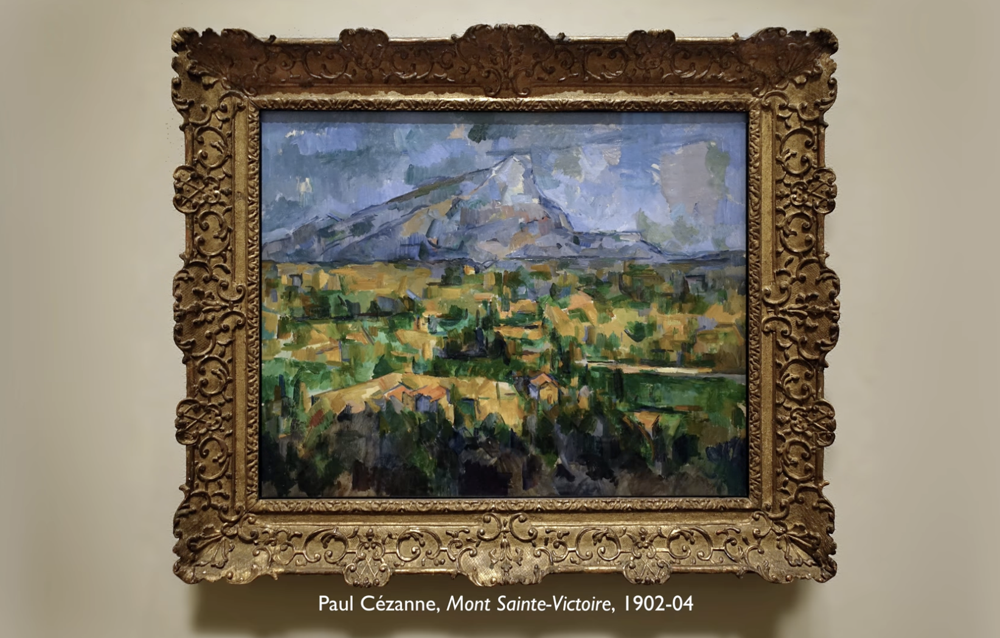

Cézanne’ın Sainte-Victoire Dağı eseri, onun baş yapıtlarından biri olmamasına rağmen özellikle bu eseri seçmemin nedeni Cézanne’ın kariyerinin son eserlerinden biri olması.

Teknik olarak Cézanne’ı çok iyi anlatan bir resim ve Kubizm’in çok ağır biçimlerini bu resimde görebiliyoruz. Cézanne bu dağa ait birçok kez resim yapmış olması, üzerinde çok çalışmış olması önemli ayrıntılarından biri. Bu resmi tamamladıktan birkaç sene sonra vefat etmiştir. Resme baktığımızda da aslında bitmemeiş resim hissi verir, bitmemiş bir resim gibi. Bitmemiş ağaçlar, evlerin şekilleri yarım kalmış gibi. Dağı da aslında yeni resmetmeye başlamış gibi göze çarpar baktıkça.
2023-maxBound Anıl Demirel